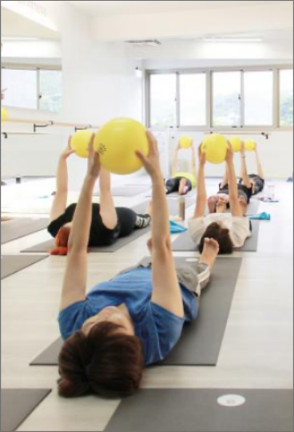

瑜珈
Yin Yoga
[流汗指數: 4- 4.5/5]
TRX是全身肌力訓練，透過調整身體傾斜角度的方式增減難易，利用自己的體重作為阻力，就是利用自身體重同時增加肌肉力量、平衡、訓練核心肌群，是可以給任何體能水準的人、在任何時間與場所訓練的運動。

Ray
證照：IHFI 康體國際學院私人教練證;CPR+AED 心肺復甦證;UFC國際拳擊研習證;TRX STC 懸吊師認證;KBC硬式壺鈴培訓認證;PADILLA OW開放水域潛水系統證;中華民國C級教練指導證;河南嵩山少林寺弟子皈依證
Gentle Yoga
[流汗指數: 4- 4.5/5]
TRX是全身肌力訓練，透過調整身體傾斜角度的方式增減難易，利用自己的體重作為阻力，就是利用自身體重同時增加肌肉力量、平衡、訓練核心肌群，是可以給任何體能水準的人、在任何時間與場所訓練的運動。
Jacky
專 業 證 照:中華民國田徑協會A級教練證;中華民國田徑協會C級裁判證;學校專任運動教練證初級;中華民國體育學會體適能檢測員證;中華民國健身運動協會指導員證;Nike Training Club體適能教練認證;TRX STC懸吊系統認證
Hot Scalpt
[流汗指數: 5/5]
是使用肌力訓練來挑戰能量代謝系統的訓練，其中包含了許多動作，內容有自由重量和徒手肌力到帶動心肺功能訓練，由許多動作組合組成的連續型訓練，因反覆不間斷的循環操作，能兼顧肌力訓練及有氧運動的效果。在有限的時間內，是最快達到運動效果的選擇
Curry
相關證照:TRX-RT;TRX-ST;TRX-SMST;FTI-KBT(壺鈴;FTI-BRT(戰繩;DVRT功能性沙;Original Strength
Zumba
[流汗指數: 4- 4.5/5]
TRX是全身肌力訓練，透過調整身體傾斜角度的方式增減難易，利用自己的體重作為阻力，就是利用自身體重同時增加肌肉力量、平衡、訓練核心肌群，是可以給任何體能水準的人、在任何時間與場所訓練的運動。
Kitty
Kitty 在中國文化大學運動健康促進系畢業，目前就讀運動教練研究所，專長是肌力體能訓練、體態雕塑、有氧舞蹈、TRX及個人健身指導，運動帶來很多好處，讓身體更靈活，讓自身反應更好讓心情更愉悅更有自信。
Aerial Yoga
[流汗指數: 4/5]
無論你想提升心肺或是燃脂，速度與肌力都是所有動態運動的基石，若真心想改變自己體能、體態，都要知道，訓練是場永無止境戰爭，唯有不斷的挑戰才能通往進步，拿出你鋼鐵般的意志 戰勝自己吧！
JIN Kuo
證照：IHFI 康體國際學院私人教練證;CPR+AED 心肺復甦證;UFC 國際拳擊研習證;TRX STC 懸吊師認證;KBC 硬式壺鈴培訓認證;PADILLA OW 開放水域潛水系統證;中華民國C級教練指導證;河南嵩山少林寺弟子皈依證
Hatha Yoga
[流汗指數: 3-3.5/ 5]
健美TRX為最普級的TRX，長期練習能讓呼吸、動作與心識結合，專注於當下，透過體位法經驗身體、開啟瑜珈的體會。此課程為TRX入門課程，適合初學者，建立個人對身心狀態的基礎察覺。
Dada
對於壓力造成的身體痠痛及緊繃和心中浮現對於人生的問號，都無從得知理想的解答，直到和瑜伽相遇後，這兩件事情的答案好像有了一點清楚的輪廓，也有了一個想要前進的方向。也想把練習瑜伽快樂的感覺分享給有緣的朋友知道，於是放棄了電子業的工作，成為一位專職的瑜伽教師。
Hot Yoga
[流汗指數: 4- 4.5/5]
空中瑜珈是運用懸垂的絹布，藉助地心引力與布的螺旋力，使平時難以完成的瑜珈動作變得較輕鬆，可幫助練習者提升身體的協調感與肌力。 搭配呼吸以改善體態的不平衡，幫助身體獲得深層的舒展與釋放緊繃壓力。此為新型態的瑜珈練習方式。

KOKO
專修:STOTTPilatesISP傷害與特殊族群認證:STOTTPilatesISP(MAT Reformer ICCB)全認證訓練師;STOTT Zen ga L1, L2資格認證:AFAA美國有氧體適能協會墊上核心訓練MAT;AFAA美國有氧體適能協會國際基本有氧PC soft X筋膜滾筒訓練師認證;AIREX balance-pad訓練師認證;Fascial Fitness訓練師認證;Ballance訓練師認證
Pilates
[流汗指數: 4/5]
結合了芭蕾、瑜珈和皮拉提斯，讓人強壯、有力量的精神和技巧，低衝擊的運動方式，適合各種程度學員，針對特定的肌肉群進行鍛鍊，大幅度的伸展將創造肢體延伸的更多空間，鍛鍊出更靈活與優美的身體。在60分鐘充滿挑戰與趣味的課程中，你將能感受到逐一肌群的啟動振奮與熱力汗水。

Malina
一開始練習瑜珈是為了把舞跳好。曾經是業餘拉丁舞選手，瑜珈只是一項鍛鍊身體的工具，上課時只想著硬撐，從不管呼吸也不懂得覺察自己的身體…直到某堂課最後的大休息，伴隨著老師放的音樂，竟默默地流下淚，當下只覺得莫名好感動，好感謝身體陪我度過這一堂課，那時才深刻感覺到內心的滿足。